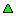

Verknüpfung
VerknüpfungFolgende Symbole werden angewendet um den Typ eines Eintrags in der Baumstruktur oder Listenanzeige aufzuzeigen.
Hinweis: diese Symbole werden in der Baumstruktur immer angezeigt. In der Listenanzeige, kann die Symbol-Spalte wohl oder nicht angezeigt werden mit Hilfe des Spaltenpflückers, aber immer nur in Spalte 1.
Knoten oder Gruppe [nur Baumstruktur]
Leere Gruppe [nur Baumstruktur]
Normaler Eintrag
 Normaler Eintrag mit Alias
Normaler Eintrag mit Verknüpfung
Alias
Verknüpfung
Zusätzlich kann ein Eintrag ein Ablaufdatum für das Passwort besitzen. Wenn der Benutzer ein Warnintervall von z.B. 5 Tage angibt bis das Passwort abläuft, zeigt sich das Bild halb in Lila.
Normaler Eintrag - das Passwort läuft im vom Benutzer festgelegten Intervall ab
 Normaler Eintrag mit Alias - das Passwort läuft im vom Benutzer festgelegten Intervall ab
Normaler Eintrag mit Alias - das Passwort läuft im vom Benutzer festgelegten Intervall ab
Normaler Eintrag mit Verknüpfung - das Passwort läuft im vom Benutzer festgelegten Intervall ab
Einmal abgelaufen, wird das Bild ganz Lila.
Normaler Eintrag - das Passwort ist abgelaufen
Normaler Eintrag mit Alias - das Passwort ist abgelaufen
Normaler Eintrag mit Verknüpfung - das Passwort ist abgelaufen